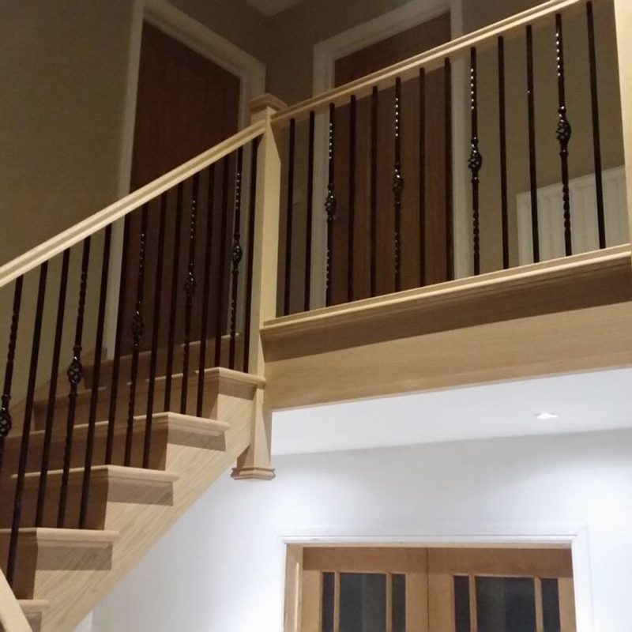
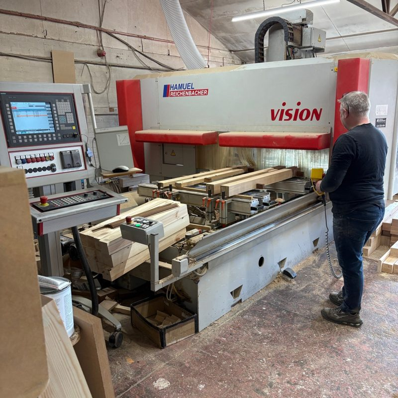
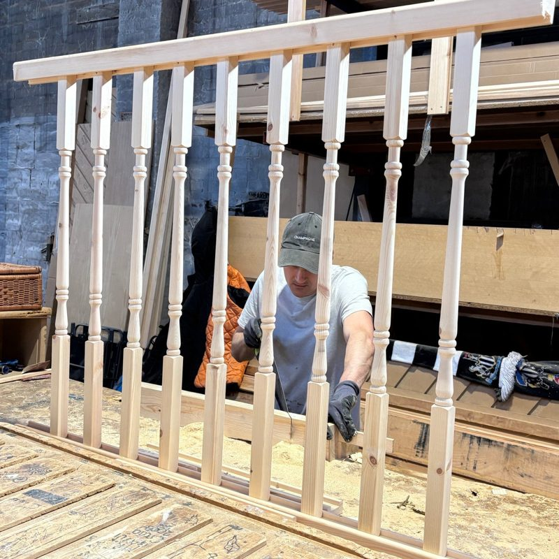
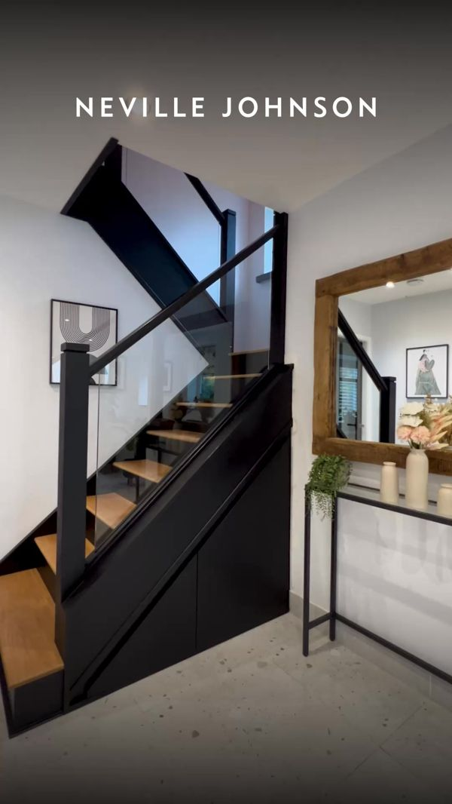
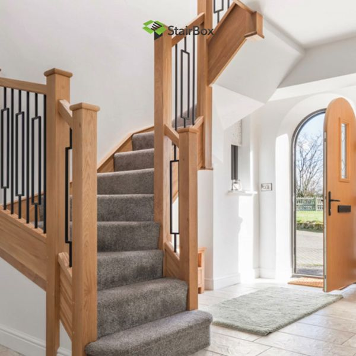
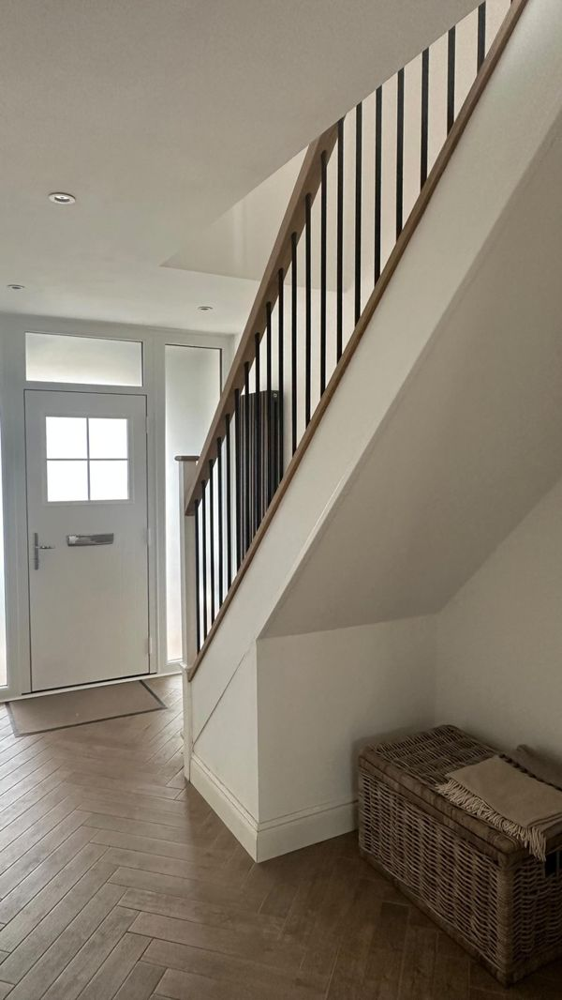

Seventy-five years of staircases. Not one of them on video.
Four generations, a factory in Newton Aycliffe, a CNC line, and a fitter called Alan who has put in staircases across the North East. National brands with half your history are on every phone in the region. We read your website, your social, your advertising and three of the staircase companies your customers see instead. This is what we found, what we would make, what it costs and what it should return.
The best story in the trade, and nobody is telling it.
You have made staircases since 1951. Duncan and Joe, father and son, run the business; John, one of the founder's sons, still sources the timber; Clare and Lynda look after customers; Alan fits. That is a story national companies would pay a fortune to have. Online, you have a thorough website, no social accounts linked from it, and no ads, while Neville Johnson advertises "40 years experience" to your customers every day.
1951
the year C.R. Atkinson started making staircases
0
Meta ads in the past year, and no social accounts linked from your website
40 years
the experience Neville Johnson advertises. You have 75
130
live Meta ads from Neville Johnson, ten of them for staircases
What is already strong, and worth building on
A family story going back to 1951, with four generations involved and named people customers will meet.
A real factory with a CNC line in Newton Aycliffe, open for customers to visit.
A full range: timber staircases in pine, sapele, ash and oak, glass and metal balustrades, conversions and stair parts.
A strong quote form (with file upload), a free site visit, and location pages for seven areas.
Repeat customers, and work for builders and developers as well as homeowners.
None of this needs a new website or a big budget. It needs the factory, the family and the finished staircases filmed, and put in front of homeowners who are thinking about their hallway.
02 · Your Meta ads
No ads, no social accounts, and national brands filling the gap.
Meta's Ad Library shows every ad run in the UK over the past year. We found no Meta advertiser account for C.R. Atkinson, and your website's "Follow us" section links to no social accounts at all. Meanwhile, the national staircase brands are advertising heavily to North East homeowners.
What that means
1
Homeowners see national brands first
Neville Johnson (about 130 live ads), StairBox (about 20) and Stairfurb (about 24) are all running video ads to UK homeowners right now. When someone in Darlington starts thinking about their staircase, those are the names they see.
Fix: put a local, 75-year-old family maker in front of them instead.
2
Stairfurb is selling against you directly
Stairfurb's ads promise a staircase makeover "for half the price of professional installation", filmed by homeowners. That is aimed squarely at people who might otherwise call you.
Fix: show what a properly made and fitted staircase looks like, and why it lasts.
3
Nobody can follow you
There is a "Follow us" heading on your website with no accounts under it. A customer who loves their new staircase has nowhere to share it or tag you.
Fix: set up and link Instagram and Facebook, then post every finished staircase.
Source: Meta Ad Library, United Kingdom, searched for C.R. Atkinson and Atkinson Stairs, all ads, checked 1 October 2026. Competitor figures from their Ad Library page views on the same day.
03 · Your website
A thorough website with one broken promise.
The site covers every service, has a page for each area you work in, introduces the team by name and has a good quote form. These are the only changes we would make.
What we saw
Why it matters
Fix
The Gallery link goes to the homepage
"Gallery" is in your main menu, but /gallery redirects to the homepage. Someone who wants to see your work finds nothing new.
Build a gallery page of finished staircases, by type.
"Follow us" with nothing to follow
The footer heading has no social links under it.
Link Instagram and Facebook once they are set up.
No video anywhere
The workshop page invites people to see your process in action. There is no video of it.
A 30 second factory film on the workshop and home pages.
Footer says 2025
Small, but it makes the site look less looked-after than it is.
One edit.



Photos from your own website. The factory and the people in it are exactly what homeowners want to see.
04 · Your social channels
No social accounts to audit.
0
social accounts linked from your website
40.2K
Instagram followers for Neville Johnson
15.9K
Instagram followers for StairBox
34.5K
Instagram followers for Stairfurb
We could not find an Instagram or Facebook account linked from your website, and none came up as an advertiser in Meta's library. That means every staircase you finish disappears from view once the customer closes the door. The national brands are building large audiences on exactly that kind of content:
Before and after. StairBox's live ads include carpenters' own videos: "from plain and boring to an oak and black spindle designer staircase".
Homeowners filming their own stairs. Most of Stairfurb's live ads are homeowners telling the story of their staircase in their own words.
Short and simple. Neville Johnson's staircase ads are ten second videos of a finished staircase, with "request a free brochure".
Starting from zero is an advantage. With no old posts to compete with, every video can be built properly from day one. Three or four short videos a week, from your factory and your customers' homes, is enough to build a local audience within months.
Sources: atkinsonstairs.co.uk, Meta Ad Library and public Instagram profiles, checked 1 October 2026.
05 · Three national competitors
Who homeowners see instead of you.
We found no North East staircase maker advertising on Meta when we checked. The three national brands below were, and they reach the same homeowners you want. Every figure was checked on 1 October 2026.
Business
Facebook / Instagram
Live Meta ads
What they lead with
Oldest live ad
C.R. Atkinson & Sons
none linked
None found
Made in Newton Aycliffe since 1951
n/a
Neville Johnson National, bespoke interiors
34.4K / 40.2K
About 130, ten for staircases
"Luxury bespoke staircase renovation from the UK market leader", "40 years experience", free brochure
Staircase ads since 17 Jul 2026
StairBox National manufacturer
13.2K / 15.9K
About 20, almost all video
Carpenters' before and after videos, an online staircase designer, 5,000+ Trustpilot reviews
31 Jul 2026
Stairfurb National, DIY makeover kits
53.1K / 34.5K
About 24, almost all video
Homeowners filming their own makeovers, "half the price of professional installation"
4 Nov 2025
What the numbers say
You have the better story. Neville Johnson leads with 40 years. You have 75, four generations and a factory people can visit.
The winning format is people and before and after. Every one of these brands uses video of real staircases in real homes. You have hundreds of them; none is online.
Stairfurb is training homeowners to think staircases are a DIY job. That is the argument you need to answer, with a fitter and a finished staircase.
We found nobody local advertising. The first North East maker to show up properly will have the region largely to itself.
Sources: Meta Ad Library (UK) page views for each business and public Instagram and Facebook profiles, 1 October 2026. Ad counts change daily.
06 · What is working in your market
Finished staircases, real homes, before and after.
These ads are live now from the national brands above. These are the patterns we would build your campaign on, using your staircases and your factory.

The finished staircaseNeville Johnson: ten seconds of one beautiful staircase, then "request a free brochure".

Before and afterStairBox: a carpenter's own makeover video, from plain to oak and black spindles.

The homeowner's storyStairfurb: the homeowner films their own hallway. Real homes, real words.
1
Show the factory
Timber going through the CNC, a balustrade coming together. A national brand cannot show where your staircase is made.
2
Show the family
Duncan and Joe, John on timber, Alan fitting. Seventy-five years is a story told by people, not a logo.
3
Show the hallway, before and after
The same hallway, the old stairs and the new. It is the format every competitor is using, and you have more of them.
07 · Twelve videos we would make
Built from your factory, your family and your staircases.
Every concept uses something C.R. Atkinson already has. Six are built to bring in site visits through ads. Six are built to grow an audience from nothing.
Ads that bring enquiries
6 concepts
Ad · reveal
Same hallway, new staircase
"This was the staircase on Monday."
A hallway before, then the finished staircase from the same spot. Ends on "book a free site visit".
Why: the format every national brand is using, with your work.
Ad · heritage
Since 1951
"We have made staircases here since 1951."
Duncan and Joe in the factory, with an old family photo and a new staircase.
Why: 75 years beats "40 years experience".
Ad · factory
Where your staircase is made
"This is where your staircase starts."
Timber through the CNC, spindles turned, a balustrade assembled. Thirty seconds.
Why: a national brand cannot show this. You can.
Ad · fitting
Alan, on install day
"I've fitted staircases all over the North East. Here's today's."
Alan removing the old staircase and fitting the new one, time-lapse.
Why: answers "is it a big job?" before anyone asks.
Ad · conversion
Keep the stairs, change the look
"You don't need a new staircase. Just new spindles."
A staircase conversion: old spindles out, glass or metal in.
Why: answers Stairfurb's offer with a properly fitted alternative.
Ad · timber
Oak, ash or sapele?
"Three timbers. Same staircase. Which would you choose?"
John on the timbers he sources and why.
Why: shows expertise nobody else in the feed has.
Organic that builds the audience
6 concepts
Series
One staircase, start to finish
"Day one. A pile of oak."
One commission followed from drawing to fitting, weekly.
Why: people follow a build to the reveal.
People
Meet the team
"Clare and Lynda answer the phone. Here's what people ask."
Short introductions to each person a customer will deal with.
Why: makes a phone call to you feel easy.
Craft
Ten seconds of making
"Listen to this."
Close-up sounds of the factory: saws, the CNC, sanding, no talking.
Why: satisfying, simple and easy to film every week.
Q&A
Ask the staircase maker
"Can you fit a new staircase without a new floor?"
Duncan or Joe answering one question a week.
Why: builds trust and brings in people early.
Trade
Built for builders
"A run of staircases for a new development."
A trade project, shown properly, for developers and builders.
Why: you serve the trade too; show it.
Customers
Five years on
"We fitted this five years ago. Still looks new."
A past customer's staircase revisited.
Why: proves the quality without saying it.
08 · The plan, month by month
Set up the channels, film the factory, then reach homeowners.
Week 1
Set up
Create or connect your Instagram and Facebook, link them from the website, build a gallery page, and install the Meta pixel through your existing Google Tag Manager.
Weeks 2 to 3
Two filming days
One in the factory with the family and the CNC, one on an install with Alan and a finished hallway. You keep working; we film around you.
Week 3
First campaign live
Three angles tested: before and after, the factory, and the family. Aimed at homeowners across the North East and North Yorkshire.
Month 2
Cut, keep, scale
New video every week. We switch off what is not bringing site visits and put the budget behind what is. Organic posting three to four times a week.
Month 3
Review on site visits and orders
We report enquiries, site visits and orders, ad by ad, and decide the next quarter's budget on those numbers.
Every month you get: 20 to 25 edited videos, two filming days, all Meta ads written, built and managed, organic posting, and a one-page report on enquiries, site visits and orders. You keep every video.
09 · Price and return
What it costs, and what it takes to pay for itself.
Content and managed ads
£1,950
a month, three month minimum, then rolling
Two filming days and 20 to 25 videos a month
Meta ads written, built and managed, tested weekly
Instagram and Facebook set up and linked in week one
Organic posting three to four times a week
Monthly report on enquiries, site visits and orders
Ad spend
£750
a month suggested to start (about £25 a day), paid by you directly to Meta
Not marked up. You can see every pound in your own account.
Aimed at North East and North Yorkshire homeowners, matching your area pages.
How many jobs pay for it
Total monthly cost: £2,700. We work this out on what you keep from a job, not on its price. We did not find your prices published, so we have assumed typical values and that you keep 35% after timber, labour and fitting. The calculator below lets you put in your own.
Job
Typical price
You keep at 35%
Jobs a month to cover £2,700
Bespoke oak staircase, fitted Our assumption, please correct
Spindle or balustrade upgrade Our assumption, please correct
£2,000
£700
4
What we would aim for
Two scenarios on £750 a month of ad spend, from month three once the new videos are running. The cost of an enquiry and the share that order are our assumptions for staircase work; your own figures replace them in week one.
Month three onwards
Cost per enquiry
Enquiries
Become jobs
Jobs won
Work you keep
After our cost
Steady about 1 or 2 jobs a month
£35
21
7%
1.5
£3,938
+£1,238
Target about 2 or 3 jobs a month
£30
25
10%
2.5
£6,562
+£3,862
Try it with your own numbers
This starts on our assumptions. Change anything you know better, such as your real job values, your margin or how many enquiries you usually turn into work, and the figures below update straight away. Nothing you type is saved or sent anywhere.
What a typical fitted job is worth. Ours mixes staircases and conversions.
£
After materials, labour and other direct costs.
%
What Meta charges, on average, for each enquiry.
£
Out of every 100 enquiries, how many turn into paid work.
%
Paid by you, directly to Meta, each month.
£
Content and managed ads, per month.
£
0
enquiries a month
0
jobs won a month
£0
of work booked
£0
you keep from that work
£0
total monthly cost
£0
left after our cost, every month
Being straight with you. These are scenarios, not promises. Nobody can guarantee what an ad will return before it runs. What we can promise is that every enquiry is tracked from the ad to the sale, so after three months you will know exactly what each pound brought in, and you can decide on facts.
10 · Who we are, and next steps
A Newcastle team that makes the videos and runs the ads.
Most ad agencies cannot film, so they run the same banners for months. Most video companies cannot run ads. We do both, which is why we can test new creative every week instead of every quarter.
16.9x
monthly revenue in 60 days for Northumberland Candle Company, from ads built on fresh video
7.8x
blended return on ad spend for the same client
87M+
views on content we have made for one North East business
Jay Williams and Anya Davey, the founders of Fusion Creative. We film, edit and run ads for businesses across the North East from Newcastle. We would be the people in your factory with the camera, and the people you call about the numbers. Both of us film and edit, and both of us are on camera when a video needs it.
Next steps
A 20 minute call, or a visit to the factory in Newton Aycliffe, to check the numbers above against your real ones.
If they stack up, we set up your social channels and gallery in week one.
Then two filming days, and the first campaign is live within three weeks.

No social accounts to audit.
We could not find an Instagram or Facebook account linked from your website, and none came up as an advertiser in Meta's library. That means every staircase you finish disappears from view once the customer closes the door. The national brands are building large audiences on exactly that kind of content:
Starting from zero is an advantage. With no old posts to compete with, every video can be built properly from day one. Three or four short videos a week, from your factory and your customers' homes, is enough to build a local audience within months.
Sources: atkinsonstairs.co.uk, Meta Ad Library and public Instagram profiles, checked 1 October 2026.